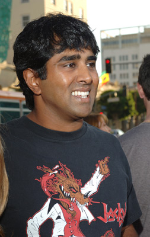
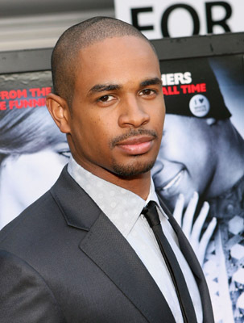
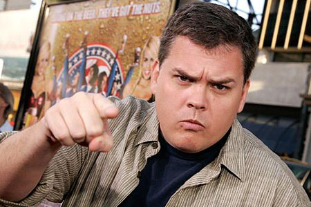
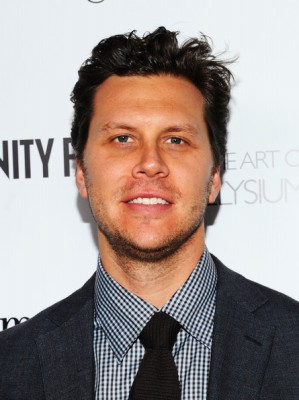

#9207 Super Troopers 2


 IMDB-Wertung: 6.1 / 10
IMDB-Wertung: 6.1 / 10  Tomatometer: 33
Tomatometer: 33  Metascore: 41
Metascore: 41 
Im Vergleich zur Grenze zu den südlichen Nachbarn in Mexiko ging es an der amerikanisch-kanadischen Grenze bislang verhältnismäßig ruhig zu. Doch dann stellt sich heraus, dass einst eine Grenzmarkierung falsch gesetzt wurde, und das Grenzgebiet zwischen den beiden nordamerikanischen Ländern wird zum Mittelpunkt eines internationalen Konflikts, weil eine ehemals frankokanadische Stadt sich auf einmal auf US-amerikanischem Terrain befindet. So erhalten die in Ungnade gefallenen Vermont Highway Patrol Officers Thorny (Jay Chandrasekhar), Farva (Kevin Heffernan), Rabbit (Erik Stolhanske), Foster (Paul Soter) und Mac (Steve Lemme) von ihrem Vorgesetzten Captain O’Hagan (Brian Cox) und der Gouverneurin Jessman (Lynda Carter) die Chance, ihre Verfehlungen ungeschehen zu machen: Sie sollen die Polizeiwache in der Stadt übernehmen und für Recht und Ordnung sorgen…
BDRIP MIC
Jahr: 2018
Dauer: 99 Minuten
FSK: 12
Land: USA Studio: Fox Searchlight PicturesTonspuren: DD2.0 - ,
Untertitel: Deutsch, Englisch,
Auflösung: 1080p (1920x1040) Größe: 7966 MB
Genre: Komödie, Krimi, Mystery
Regisseur: Jay Chandrasekhar
Drehbuch: Jay Chandrasekhar
Soundtrack: Eagles of Death Metal
Darsteller:
 Seann William Scott als Trooper Callaghan
Seann William Scott als Trooper Callaghan Clifton Collins Jr. als Bus Driver
Clifton Collins Jr. als Bus Driver- Steve Lemme als Mac
- Erik Stolhanske als Rabbit
-  Jay Chandrasekhar als Thorny
- Paul Soter als Foster
-  Damon Wayans Jr. als Trooper Wagner
-  Kevin Heffernan als Farva
 Brian Cox als Captain O'Hagan
Brian Cox als Captain O'Hagan- Marisa Coughlan als Ursula
- Bruce McCulloch als Border Officer Charles Lloyd
- Lynda Carter als Governor Jessman
 Rob Lowe als Guy LeFranc
Rob Lowe als Guy LeFranc-  Hayes MacArthur als Mountie Podien
 Tyler Labine als Mountie Bellefuille
Tyler Labine als Mountie Bellefuille- Will Sasso als Mountie Archambault
- Emmanuelle Chriqui als Genevieve Aubois
- Liliane Klein als Crowd Member 1
- Alexa Don als Female Escort
- Max Murphy als Male Escort 2
- Paul Bellefeuille als Angry Canadian
 Jimmy Tatro als Lance Stonebreaker
Jimmy Tatro als Lance Stonebreaker- Andrew Carter als Stonebreaker Passenger
- Neil W. Garguilo als Grocery Driver
 Jim Gaffigan als Larry Johnson
Jim Gaffigan als Larry Johnson- Michael Yurchak als American Driver
- Carrie Clifford als American Passenger
 Paul Walter Hauser als Lonnie Laloush
Paul Walter Hauser als Lonnie Laloush Owen Burke als Chicanery's Waiter
Owen Burke als Chicanery's Waiter- Maggie Castle als Cassandra Anne Gacek
- Brandon Cordeiro als Paramedic
- Fred Savage als Fred Savage
 Ralph Ayala als Strip Club Patron (uncredited)
Ralph Ayala als Strip Club Patron (uncredited)- Nico Birnbaum als Mountie Driver #1 (uncredited)
- Jeff Bouffard als Ontario Police Officer (uncredited)
- Kateri DeMartino als Canadian Local Townsfolk (uncredited)
- Manny Famolare als Canadian Townsfolk (uncredited)
- Tayla Fernandez als Groupie (uncredited)
- Christopher Foley als Bordello Worker (uncredited)
- Steve Gagliastro als Mall Employee (uncredited)
 Ed Goode als Canadian Townie (uncredited)
Ed Goode als Canadian Townie (uncredited) Elaine Victoria Grey als Canadian Local (uncredited)
Elaine Victoria Grey als Canadian Local (uncredited) Arthur Hiou als St. George Townsfolk (uncredited)
Arthur Hiou als St. George Townsfolk (uncredited)- Pamela Horton als Ukulele Groupie (uncredited)
 Rosemary Howard als Mall Shopper (uncredited)
Rosemary Howard als Mall Shopper (uncredited) Bobby Kenney als Townfolk (uncredited)
Bobby Kenney als Townfolk (uncredited)- Joseph Langlois als First Hockey Puck Thrower (uncredited)
- Adam Lonergan als Stripper (uncredited)
- Jeffrey Marshall als Actor (uncredited)
 Adrian M. Mompoint als Restaurant patron (uncredited)
Adrian M. Mompoint als Restaurant patron (uncredited)
Datei: X:\2-Dilogie(N-Z)\Super Troopers\Super Troopers 2 (2018, FSK12, 1920x1040).mkv seit 19.07.2018
Festplatte: HD Collection-2(A-Z)-3(A-M)
 Alle Filme aus Gruppe '2-Dilogie(N-Z)\Super Troopers'
Alle Filme aus Gruppe '2-Dilogie(N-Z)\Super Troopers'